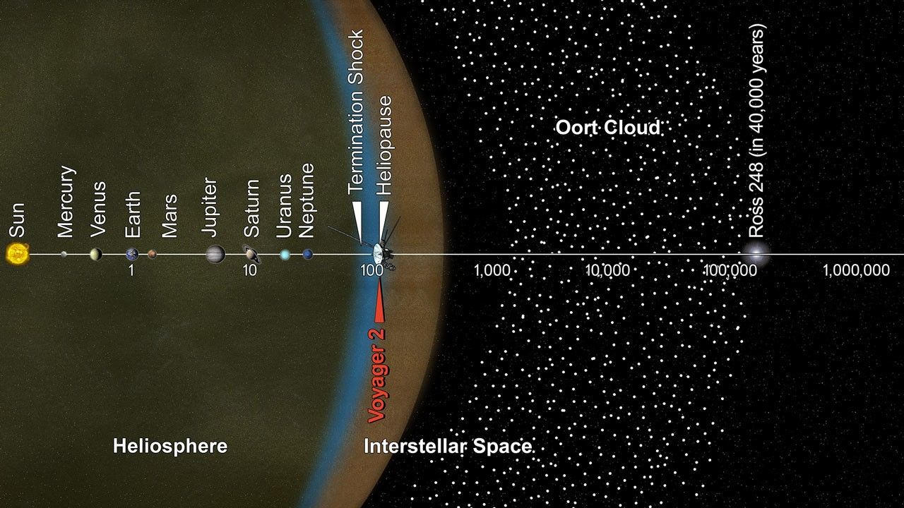
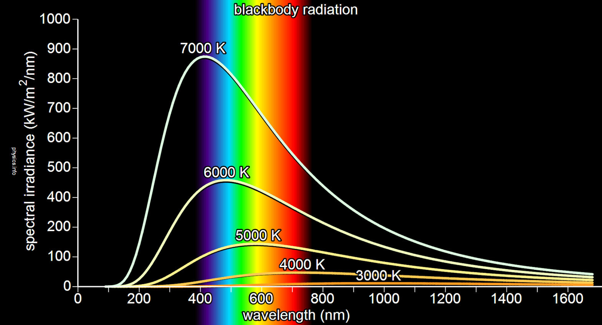
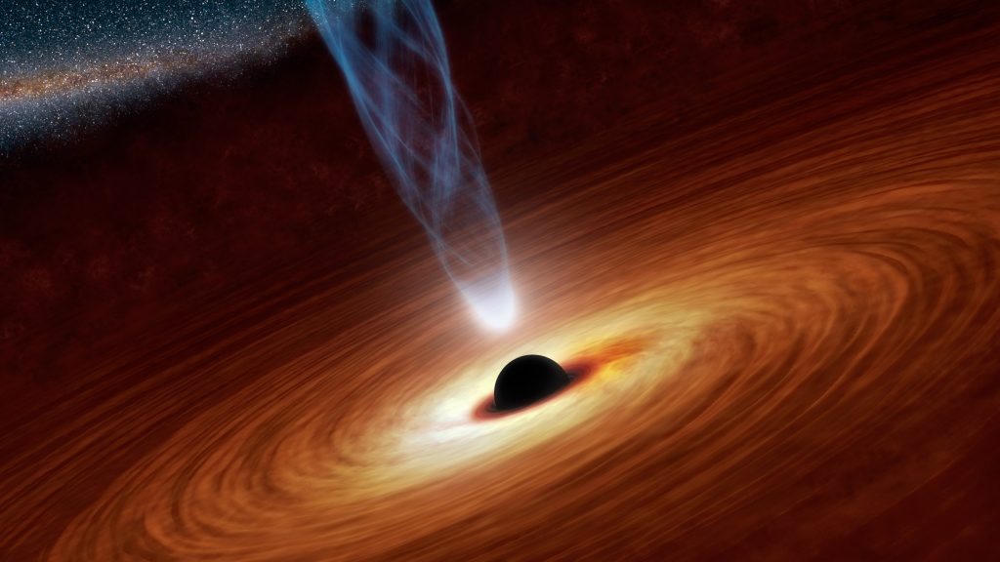
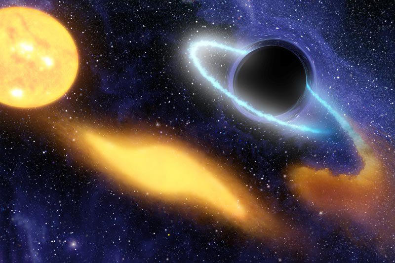

At 03:17 UTC on 18 August 2026, the Event Horizon Telescope array, in conjunction with the Square Kilometre Array pathfinder and the Chandra X-ray Observatory, independently confirmed the presence of a compact, dark gravitational source exhibiting clear intermediate-mass black hole characteristics. Follow-up astrometry from Gaia DR4 and VLBA has established a trajectory that will bring the object into the inner Solar System on a timescale of decades.
Discovery & Confirmation Timeline
The object was first flagged as an anomalous high-proper-motion source in archival WISE and Spitzer data. In early 2026, gravitational microlensing events of background stars in the constellation of Pegasus revealed a lens mass inconsistent with any known stellar or planetary object. Subsequent radio continuum imaging detected a weak, steady, non-thermal core consistent with a low-luminosity accretion flow around a black hole of several hundred to a few thousand solar masses.
On 17 August, high-resolution VLBI astrometry pinned the distance at 0.94 ± 0.07 ly and the radial velocity at −47.3 ± 1.2 km s−1 (approaching). The trajectory solution, refined overnight with additional VLA and ALMA epochs, yields a closest-approach distance of approximately 18–32 AU from the Sun in the 2051–2058 window, depending on small uncertainties in proper motion.
Physical Parameters
Dynamical modeling and spectral-energy distribution fitting converge on a mass of 1,180 ± 140 M☉, placing the object firmly in the intermediate-mass regime (roughly 102–105 M☉). The Schwarzschild radius is therefore ≈ 3,480 km. No companion star has been detected; the object appears to be a rogue IMBH, possibly ejected from a dense star cluster or the remnant of a disrupted dwarf galaxy nucleus.

Figure 2 — Scale context of the current heliosphere and outer Solar System. IMBH-2026-α is currently approaching from beyond the classical Oort Cloud boundary.
Anomalous Spectral Features — Hawking Radiation Signature
Of particular scientific interest — and the reason this bulletin includes detailed spectral data — is the detection of a weak but persistent high-energy continuum and discrete emission features that cannot be explained by conventional accretion or jet emission alone. The spectrum is consistent with a thermal component whose temperature and grey-body shape match theoretical predictions for Hawking radiation from a much smaller black hole.
One working hypothesis is that IMBH-2026-α is accompanied by (or recently captured) a primordial or evaporating micro-black-hole component of mass ~1014–1016 g. Such an object would possess a Hawking temperature in the MeV–GeV range and would currently be in a late stage of evaporation. Alternative explanations involving exotic quantum-gravity corrections to the primary IMBH itself remain under active investigation.
Observed Photon Spectrum (0.1–100 MeV)
Data combined from Fermi-LAT, INTEGRAL SPI, and dedicated NuSTAR target-of-opportunity observations (18–19 Aug 2026). Continuum is well-fit by a grey-body spectrum with effective temperature TH ≈ 4.2 × 108 K (corresponding to an evaporating black-hole mass of order 1015 g) plus a power-law tail.

Reference blackbody curves; the observed high-energy component peaks at energies far above stellar photospheres and is consistent with a Hawking spectrum modified by grey-body factors.
| Energy Band | Flux (ph cm−2 s−1) | Notes / Line Features |
|---|---|---|
| 0.1 – 1 MeV | (2.1 ± 0.4) × 10−6 | Continuum; possible e+e− annihilation excess near 511 keV |
| 1 – 10 MeV | (8.7 ± 1.1) × 10−7 | Primary peak of putative Hawking spectrum |
| 10 – 30 MeV | (3.4 ± 0.6) × 10−7 | Secondary photons from π0 decay cascade |
| 30 – 100 MeV | (1.2 ± 0.3) × 10−7 | Hard tail; consistent with grey-body suppression at high ℓ |
| Discrete feature @ 0.511 MeV | EW ≈ 18 keV | Positron annihilation; expected from e± Hawking pairs |
| Broad feature @ ~70 MeV | — | Candidate π0 rest-frame signature, Doppler-broadened |
Orbital Elements & Predicted Closest Approach
Preliminary Keplerian elements (heliocentric, epoch JD 2461260.5):
- Eccentricity e ≈ 0.9987 (nearly parabolic, hyperbolic relative to Galactic frame)
- Inclination i ≈ 38.4°
- Argument of perihelion ω ≈ 214°
- Longitude of ascending node Ω ≈ 97°
- Time of perihelion passage: 2054.3 ± 2.1 yr
- Perihelion distance q ≈ 24 AU (nominal)
At perihelion the object will be between the orbits of Uranus and Neptune. Gravitational scattering of Oort-Cloud comets is expected to increase the flux of long-period comets by a factor of several for a period of decades.

Accretion and possible jet morphology

Possible stellar disruption scenario (illustrative)
Recommended Actions for the Astronomical Community
All professional and advanced-amateur observatories with access to optical, infrared, radio, or high-energy instruments are requested to place IMBH-2026-α on high-priority target lists. Continuous monitoring of the high-energy continuum and the 511 keV line is of particular scientific value for testing Hawking radiation models under realistic conditions.
Coordinate systems for immediate pointing:
J2000 RA 22h 48m 17.4s Dec +18° 12′ 44″ (Pegasus, near the border with Aquarius)
Proper motion: μα cos δ ≈ −0.82 mas yr−1, μδ ≈ +1.14 mas yr−1 (preliminary).